Cátedra 18: Transformadas de Legendre y Gran Potencial
Revisión sistemática de la estructura matemática de los potenciales termodinámicos y presentación del gran potencial $\Omega(T,V,\mu) = -pV$, natural en el ensemble gran canónico donde $N$ fluctúa.
Temas que cubre
- Estructura matemática de la transformada de Legendre: intercambio de variables conjugadas
- Los cinco potenciales: $U$, $F$, $H$, $G$ y $\Omega$ (gran potencial)
- Gran potencial $\Omega(T,V,\mu) = F - \mu N = -pV$
- Cuadrado de Born: mnemotecnia para los cuatro potenciales clásicos y sus relaciones de Maxwell
- Coeficientes de respuesta: $C_V$, $C_p$, $\kappa_T$, $\kappa_S$, $\alpha_p$
- Relaciones entre coeficientes: $C_p - C_V = TV\alpha_p^2/\kappa_T$
Conceptos clave
Gran potencial $\Omega$
$\Omega = F - \mu N = U - TS - \mu N = -pV$. Es el potencial natural del ensemble gran canónico (variables $T$, $V$, $\mu$ fijos). Análogamente a $F = -k_BT\ln Z$ en el canónico, $\Omega = -k_BT\ln\Xi$ donde $\Xi$ es la gran función de partición.
Coeficientes de respuesta
Caracterizan cómo responde el sistema a perturbaciones: $C_p = T(\partial S/\partial T)_p$ (calor específico a presión constante), $\kappa_T = -(1/V)(\partial V/\partial p)_T$ (compresibilidad), $\alpha_p = (1/V)(\partial V/\partial T)_p$ (expansión térmica). Todos son medibles experimentalmente.
Cuadrado de Born
Diagrama mnemotécnico que organiza $U$, $F$, $H$, $G$ en un cuadrado con sus variables naturales en los vértices ($S$, $V$, $T$, $p$). Permite leer las derivadas y las relaciones de Maxwell sin memorizar — solo hay que conocer la estructura del cuadrado.
$C_p > C_V$ siempre
$C_p - C_V = TV\alpha_p^2/\kappa_T \geq 0$ porque $\alpha_p^2 \geq 0$ y $\kappa_T > 0$ (estabilidad mecánica). Para el gas ideal: $C_p - C_V = Nk_B$. La diferencia es pequeña en sólidos ($V$ casi incompresible) y grande en gases.
Fórmulas fundamentales



Qué hay que entender
- El gran potencial $\Omega = -pV$ parece trivial, pero encierra toda la física del ensemble gran canónico: $\ln\Xi = pV/(k_BT)$, de donde se extraen $\langle N\rangle$, $U$, $S$ y las fluctuaciones.
- La identidad $C_p - C_V = TV\alpha_p^2/\kappa_T$ es más que una fórmula: expresa que el calor extra de $C_p$ respecto de $C_V$ se debe al trabajo de expansión contra la presión constante.
- El cuadrado de Born no es solo mnemotecnia: refleja la estructura geométrica simpléctica del espacio termodinámico. Las cuatro relaciones de Maxwell son las cuatro "diagonales" del cuadrado.
- La diferencia $\kappa_T/\kappa_S = \gamma > 1$ explica por qué Newton subestimó la velocidad del sonido: asumió compresión isotérmica cuando en realidad es adiabática.